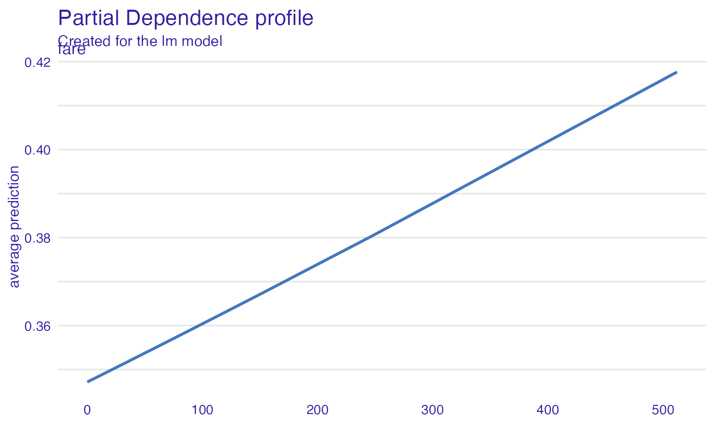
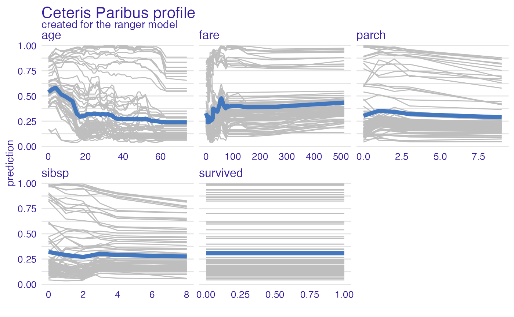
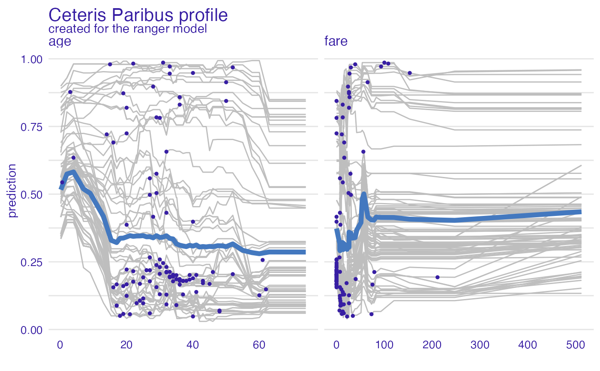
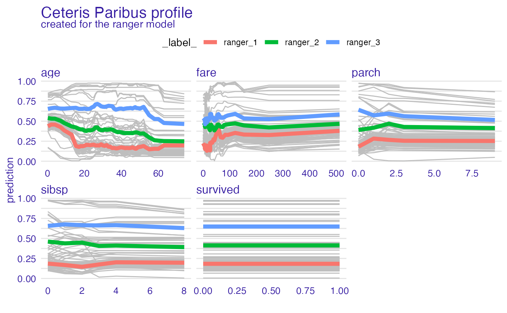
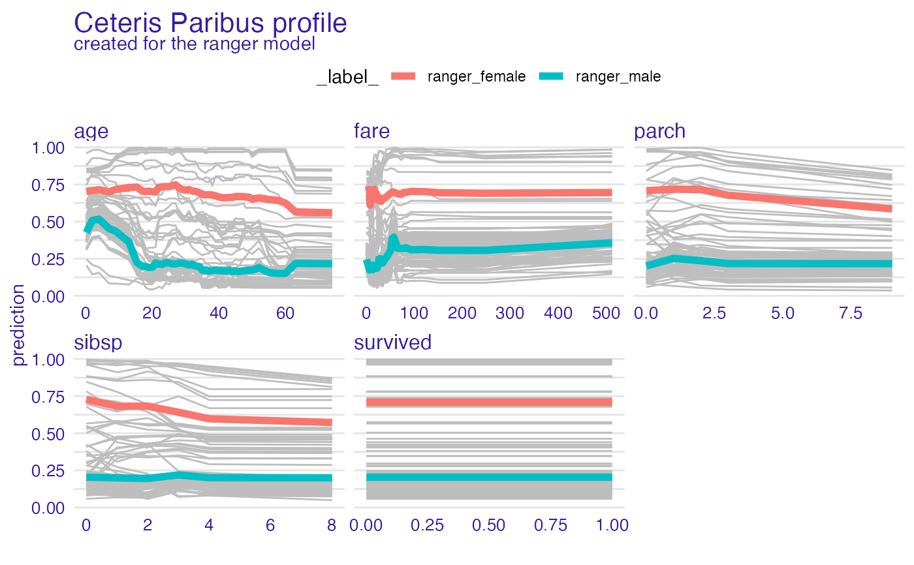
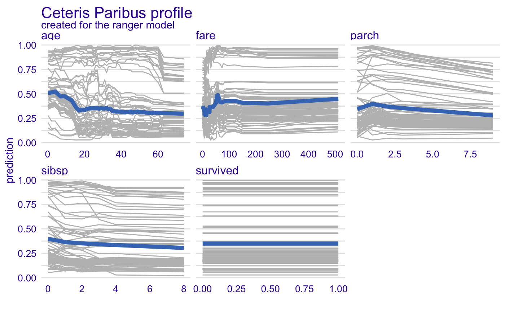
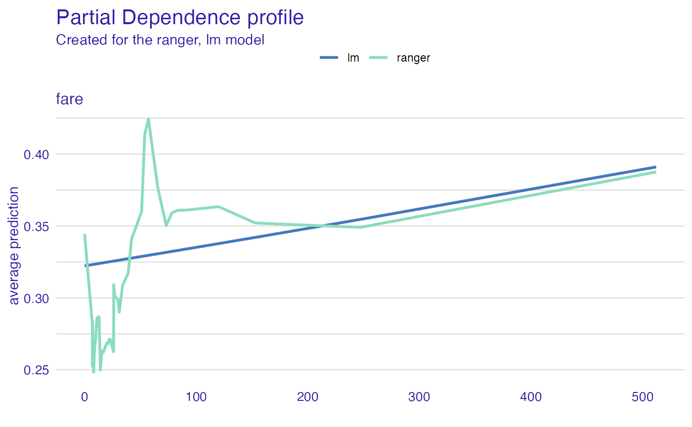

R/model_profile.R
model_profile.RdThis function calculates explanations on a dataset level set that explore model response as a function of selected variables.
The explanations can be calulated as Partial Dependence Profile or Accumulated Local Dependence Profile.
Find information how to use this function here: https://pbiecek.github.io/ema/partialDependenceProfiles.html.
The variable_profile function is a copy of model_profile.
model_profile( explainer, variables = NULL, N = 100, ..., groups = NULL, k = NULL, center = TRUE, type = "partial" ) variable_profile( explainer, variables = NULL, N = 100, ..., groups = NULL, k = NULL, center = TRUE, type = "partial" ) single_variable(explainer, variable, type = "pdp", ...)
| explainer | a model to be explained, preprocessed by the |
|---|---|
| variables | character - names of variables to be explained |
| N | number of observations used for calculation of aggregated profiles. By default |
| ... | other parameters that will be passed to |
| groups | a variable name that will be used for grouping.
By default |
| k | number of clusters for the hclust function (for clustered profiles) |
| center | shall profiles be centered before clustering |
| type | the type of variable profile. Either |
| variable | deprecated, use variables instead |
An object of the class model_profile.
It's a data frame with calculated average model responses.
Underneath this function calls the partial_dependence or
accumulated_dependence functions from the ingredients package.
Explanatory Model Analysis. Explore, Explain and Examine Predictive Models. https://pbiecek.github.io/ema/
titanic_glm_model <- glm(survived~., data = titanic_imputed, family = "binomial") explainer_glm <- explain(titanic_glm_model, data = titanic_imputed)#> Preparation of a new explainer is initiated #> -> model label : lm ( default ) #> -> data : 2207 rows 8 cols #> -> target variable : not specified! ( WARNING ) #> -> predict function : yhat.glm will be used ( default ) #> -> predicted values : numerical, min = 0.008128381 , mean = 0.3221568 , max = 0.9731431 #> -> model_info : package stats , ver. 4.0.2 , task classification ( default ) #> -> model_info : Model info detected classification task but 'y' is a NULL . ( WARNING ) #> -> model_info : By deafult classification tasks supports only numercical 'y' parameter. #> -> model_info : Consider changing to numerical vector with 0 and 1 values. #> -> model_info : Otherwise I will not be able to calculate residuals or loss function. #> -> residual function : difference between y and yhat ( default ) #> A new explainer has been created!# \donttest{ library("ranger") titanic_ranger_model <- ranger(survived~., data = titanic_imputed, num.trees = 50, probability = TRUE) explainer_ranger <- explain(titanic_ranger_model, data = titanic_imputed)#> Preparation of a new explainer is initiated #> -> model label : ranger ( default ) #> -> data : 2207 rows 8 cols #> -> target variable : not specified! ( WARNING ) #> -> predict function : yhat.ranger will be used ( default ) #> -> predicted values : numerical, min = 0.01541245 , mean = 0.3210862 , max = 0.9986087 #> -> model_info : package ranger , ver. 0.12.1 , task classification ( default ) #> -> model_info : Model info detected classification task but 'y' is a NULL . ( WARNING ) #> -> model_info : By deafult classification tasks supports only numercical 'y' parameter. #> -> model_info : Consider changing to numerical vector with 0 and 1 values. #> -> model_info : Otherwise I will not be able to calculate residuals or loss function. #> -> residual function : difference between y and yhat ( default ) #> A new explainer has been created!model_profile_ranger <- model_profile(explainer_ranger) plot(model_profile_ranger, geom = "profiles")model_profile_ranger_1 <- model_profile(explainer_ranger, type = "partial", variables = c("age", "fare")) plot(model_profile_ranger_1 , variables = c("age", "fare"), geom = "points")model_profile_ranger_2 <- model_profile(explainer_ranger, type = "partial", k = 3) plot(model_profile_ranger_2 , geom = "profiles")model_profile_ranger_3 <- model_profile(explainer_ranger, type = "partial", groups = "gender") plot(model_profile_ranger_3 , geom = "profiles")model_profile_ranger_4 <- model_profile(explainer_ranger, type = "accumulated") plot(model_profile_ranger_4 , geom = "profiles")# Multiple profiles model_profile_ranger_fare <- model_profile(explainer_ranger, "fare") plot(model_profile_ranger_fare, model_profile_glm_fare)# }